正文:
我本身是一个近视眼，从初中开始就带眼镜，到现在即使戴隐形眼镜我也会再带一副无镜片的框架眼镜
我个人觉得我戴眼镜会好看一些……因为我的泪沟眼袋黑眼圈都很明显，再加上我平时又不化妆，只有靠戴眼镜稍微遮一遮⚆_⚆
来看看....从小到大一直伴随我成长的眼袋
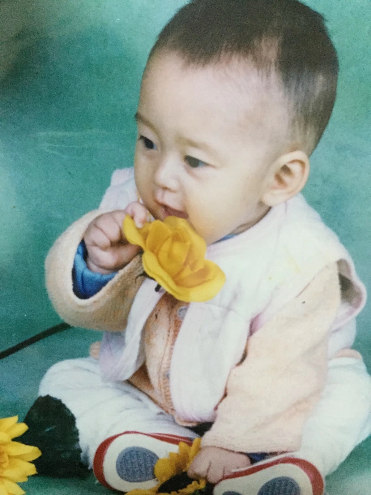
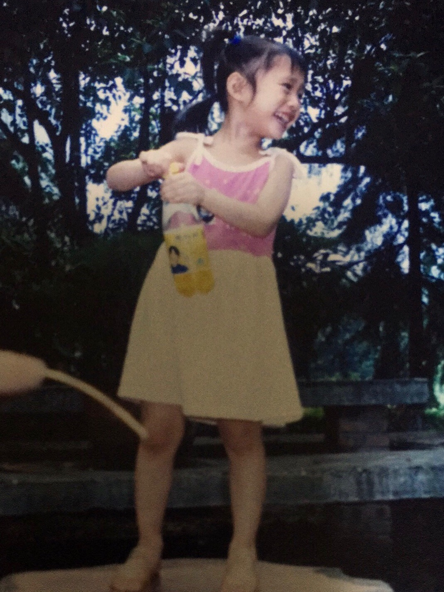
长大后依然很明显！！！
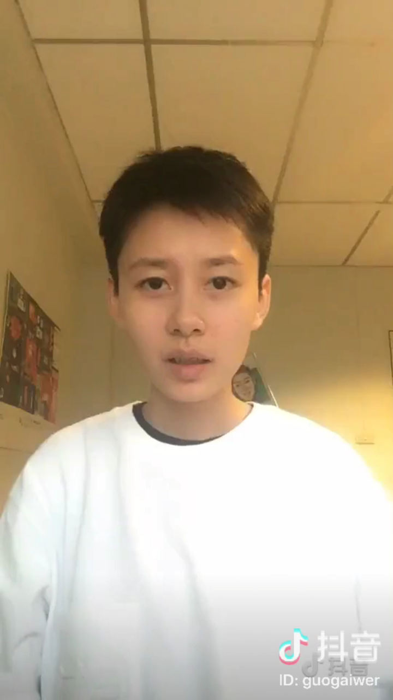
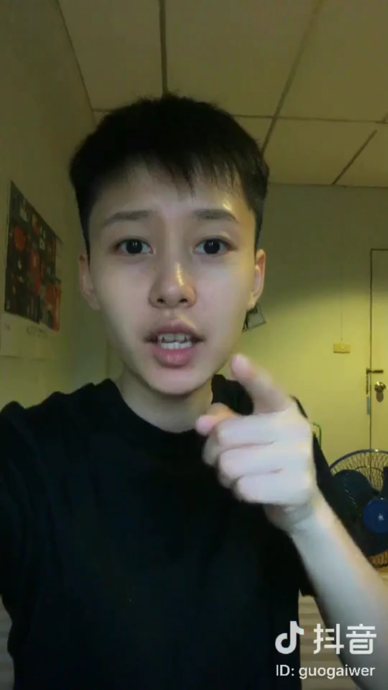
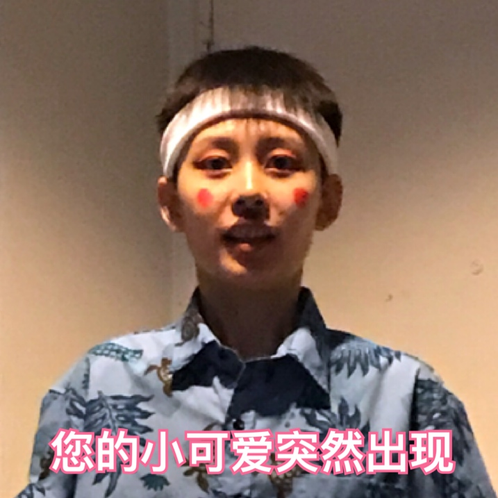
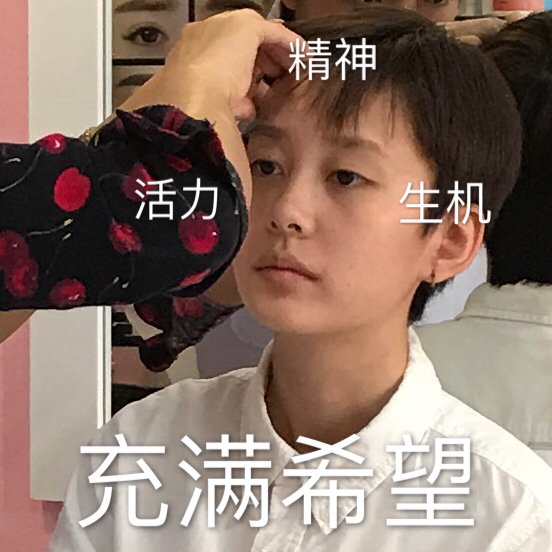
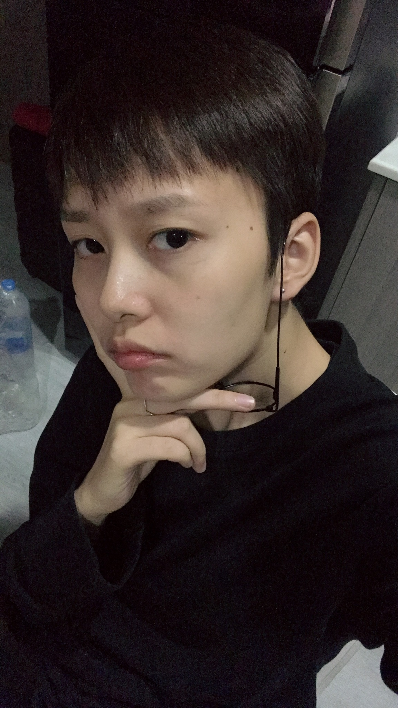
看到这里，肯定有人会问了，这tm男的女的啊？
那我也告诉你们，我tm是女的！是女的！是女的！
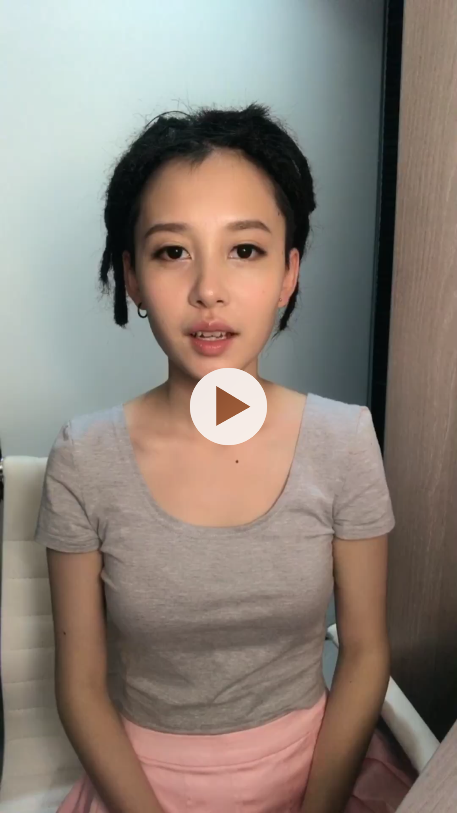
不要点了，这只是一张视频截图눈_눈
微博我有发过一个口红妆教，有兴趣的可以去看看
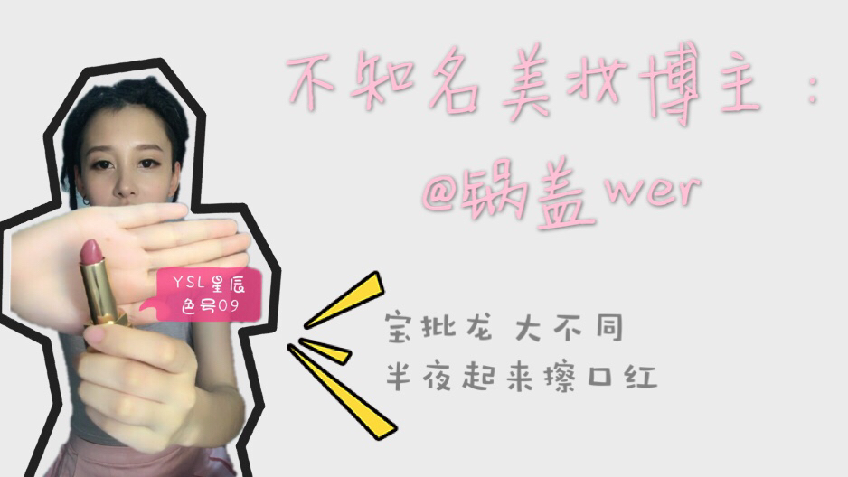
然后再来看我戴眼镜的照片吧，我有一副近视眼镜两副镜框
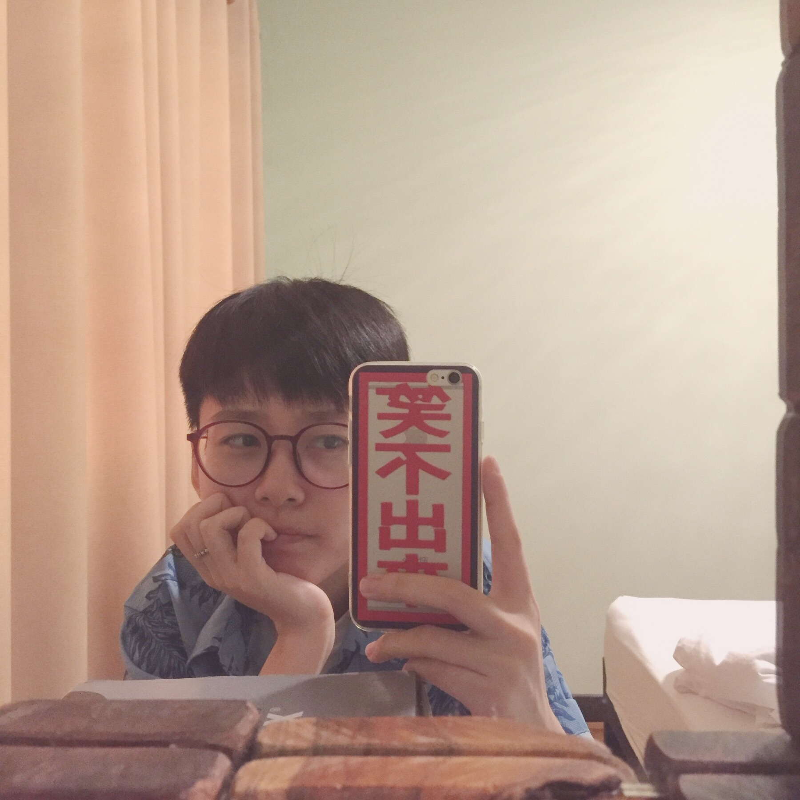
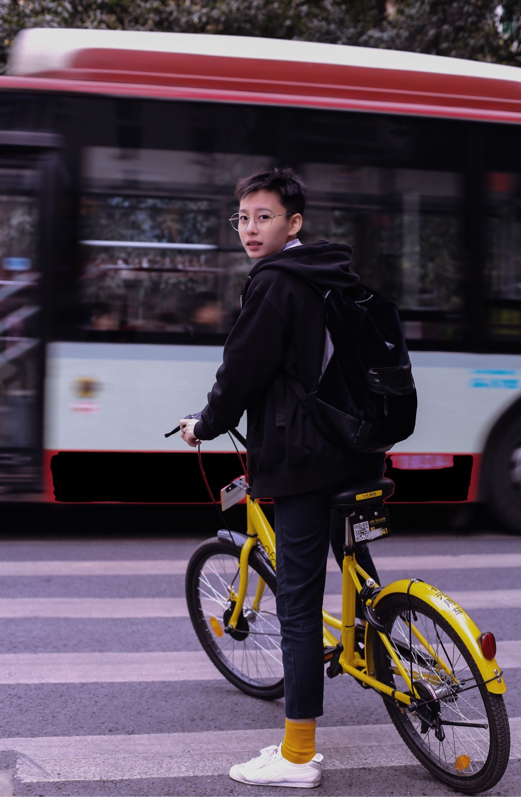
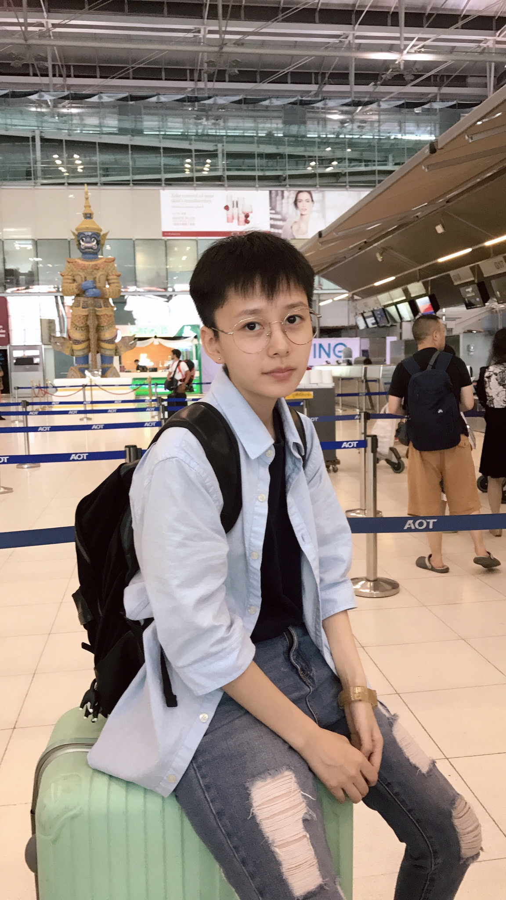
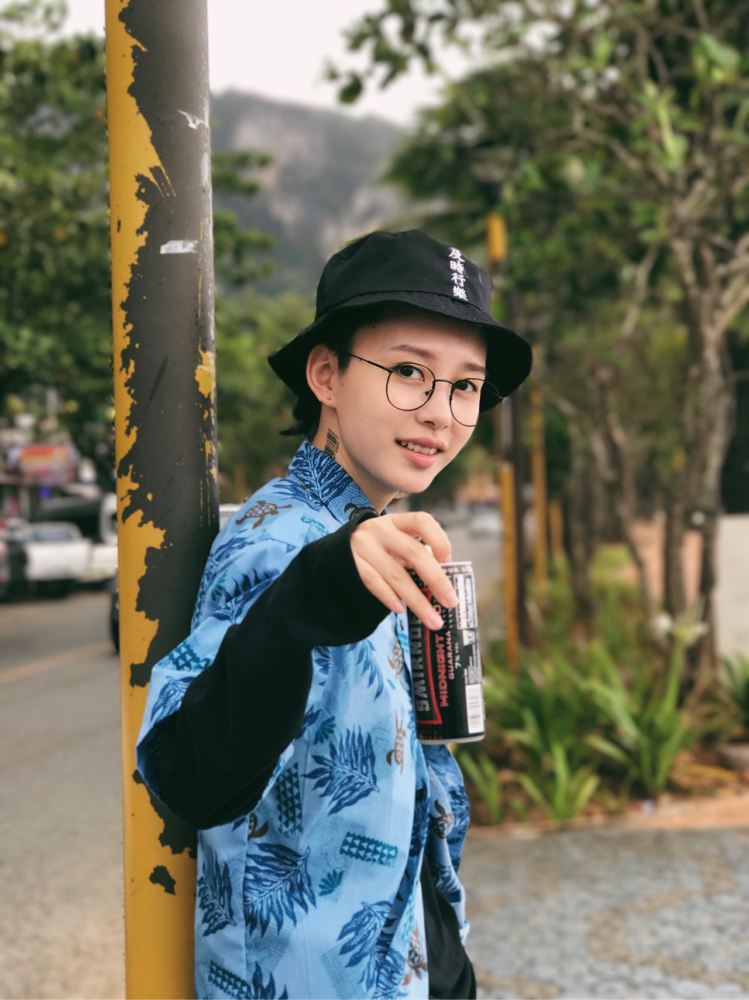
就我个人而言，我觉得
我，长脸，泪沟深，眼袋重，黑眼圈，戴眼镜好看一点。
就这个话题而言，我觉得
戴不戴眼镜对颜值的影响也不是很大吧，不是说戴个眼镜就帅得惊为天人，或者摘掉眼镜就美得不要不要的，只是气质会有所不同而已。港真，颜值这个东西和戴不戴眼镜又有多大关系呢……
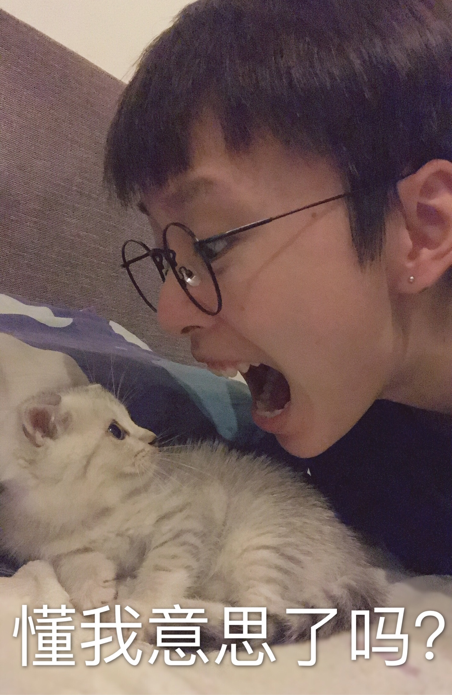